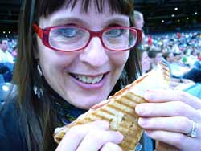

Ballpark food, again
Another depressing loss for our Pirates, another chance to eat food at the ballyard. Tonight I tried one of the new offerings at PNC Park, a panino. I asked the lady behind the counter what was on it and she replied, “Italian meats and cheeses.” It seemed to have peperoni, salami, and maybe provolone or mozzarella cheese on the inside; the outside was quite oily and sprinkled with dried Italian seasoning (a big piece of which was lodged between my front teeth throughout the evening, unbeknownst to me until I got home).

The overall flavor was greasy and salty and I didn’t much like it. I gave most of it to Poppy and had a cup of coffee and some of those cinnamon-roasted almonds later; I really love them.
Comments
Good to see you’re doing your part by going to the ballpark and cheering the Pirates on.
Are you able to bring food in to the stadium from outside? At Camden Yards in Baltimore the food that is sold inside the stadium is ridiculously expensive but there are stands outside that have reasonable prices and more interesting food.
Yes, you are allowed to bring food in, thank goodness, but it took so long to make the darn granola that I didn’t have time to pack anything yesterday afternoon. We went to Camden Yards once, and we got barbecue from that concession that’s run by the former ballplayer, I forget his name—it was really good, but expensive. When the kids were smaller and we were broker I always brought a cooler with us. I’m famous for having my head in the cooler when Bobby Bonilla hit one of the longest home runs we ever had at Three Rivers Stadium!
And the kielbasa was kind of lame, too…but the fries from Primanti Bros were good. I was about 4 rows behind you at the game…I thought, wow, she looks a lot like that food blogger I’ve been reading! :o) Game was depressing but what a great night to be at the ballpark.
That’s funny, Marcy! did you see my husband taking my picture holding the sandwich? (three times actually because I’m so vain?)
He had the new Primanti Bros. roast beef sandwich and it looked good; I think I’ll get that next time.
LOL, no, I didn’t see him take the picture three times…if it were me I would have done the same thing—gotta get just the right shot! My friend had the roast beef and it did look good. I always end up with the wrong thing at the ballpark (plus my beer is always too warm), and it seems like the Pirates lose every time I go (is it me, or is it them?)
No, Marcy, it is not you, it’s them! For a complete breakdown of that game, and the season so far, see my husband and youngest son’s blog, Romo Phone Home. He is usually the world’s biggest fan but I don’t think I’ve ever seen him so fed up.
But back to the more important topic of ballpark food and drink—I’m unhappy that they closed the Seattle’s Best coffeeshop! I don’t drink beer, and even if I did I don’t think I would drink it at the ballpark; I would hate to pay those prices and have to climb over people’s knees every five minutes to pee. And on a chilly, rainy night a cup of hot coffee really hits the spot. Plus my caffeine addiction has me jonesing for a regular hit right around 2:00 PM every afternoon, so by the time we get home from a Sunday afternoon game I am frantic. Am I the only fan in Pittsburgh who wants a decent cup of coffee at the ballyard?!!
I just reviewed your husband’s blog and I have to agree…it’s just plain beyond depressing to be a Pirates fan these past few years. But yet, we still go! I also miss the Seattle’s Best. A good cup of coffee is a must ANYWHERE, but is especially welcome at a ballpark where it can get mighty chilly in the spring and fall. Have you ever been to a Washington Wild Things’ game? Falconi Field is a really fun place to watch a ballgame and there’s something so “Bull Durham” about it all. :o)
No, Marcy—we haven’t been to see the Wild Things, yet, although we do finally plan to get around to seeing the Altoona Curve this summer in August, when my husband has scheduled a gig at a club in Altoona called Burgi’s Roundhouse during a weekend that coincides with the Curve playing in town. We have been trying to work that out unsuccessfully for the past several summers. My parents live near Hagerstown, Maryland and we have gone to see the Hagerstown Suns play a number of times and really enjoyed ourselves.
Add a comment